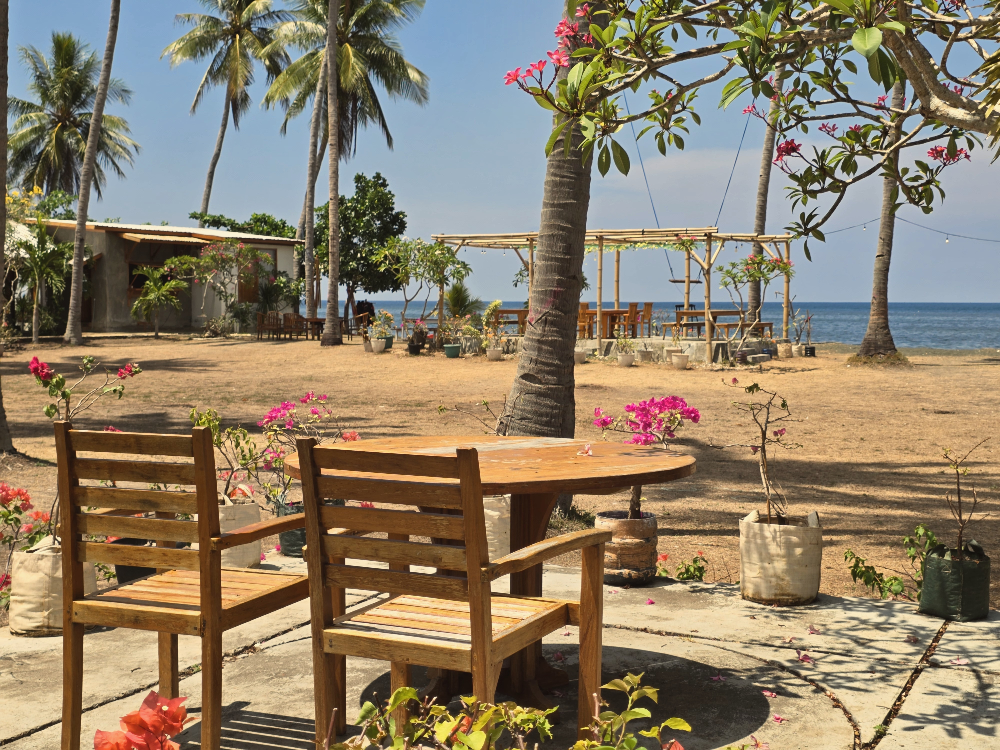
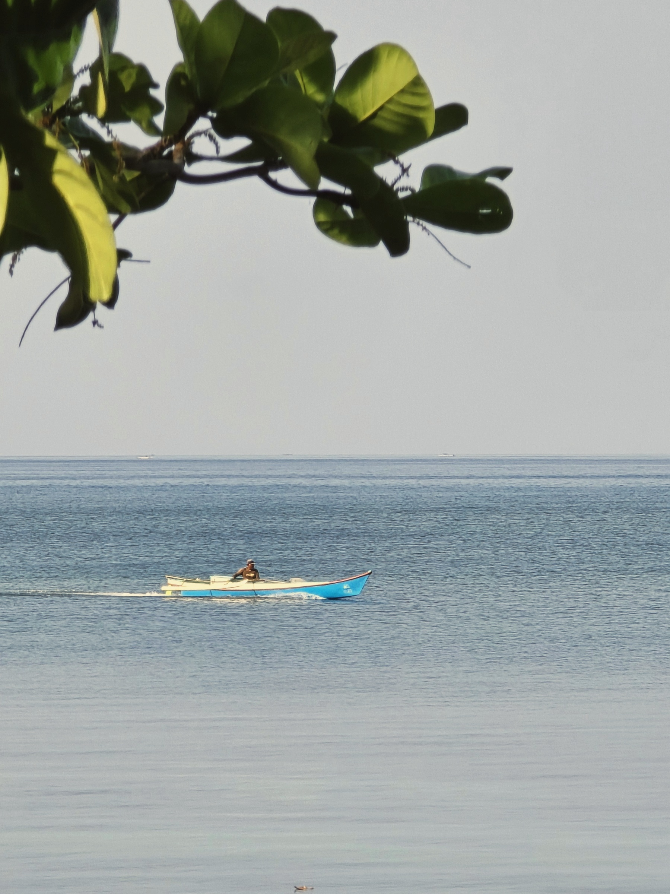
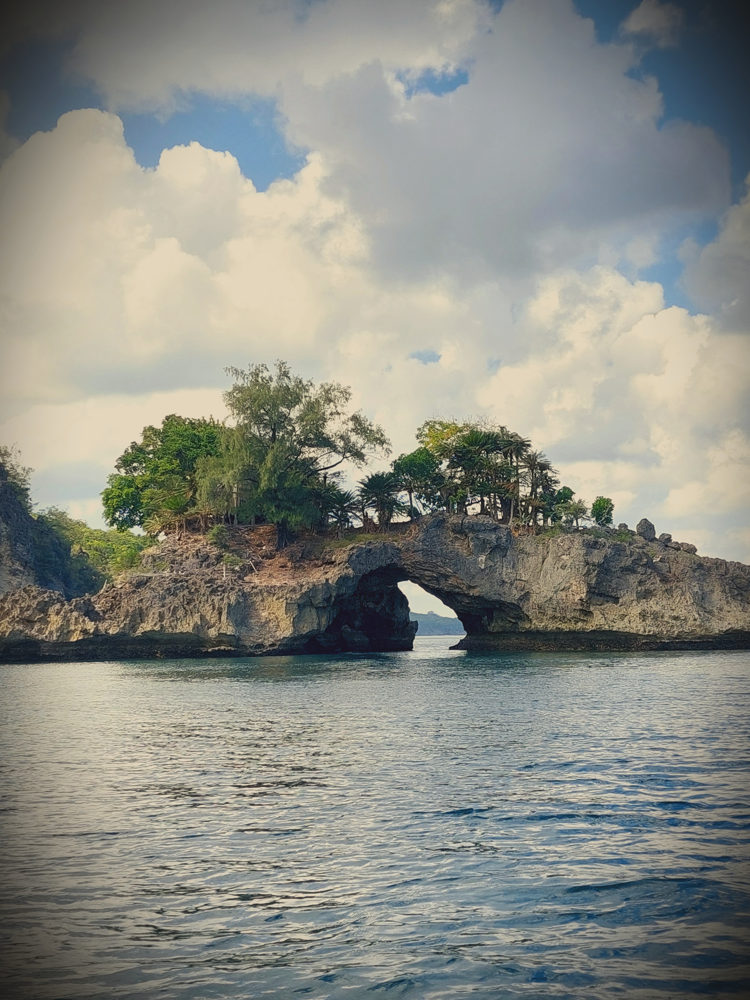
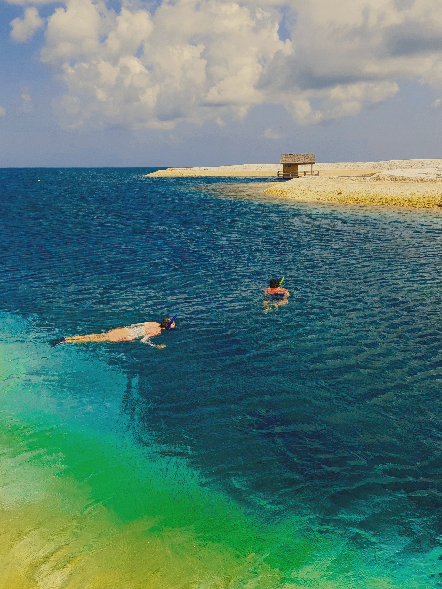
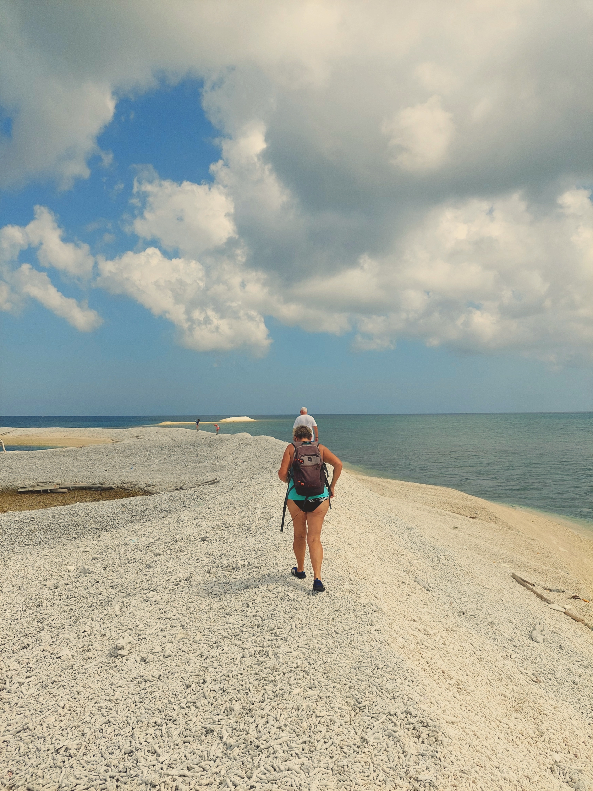
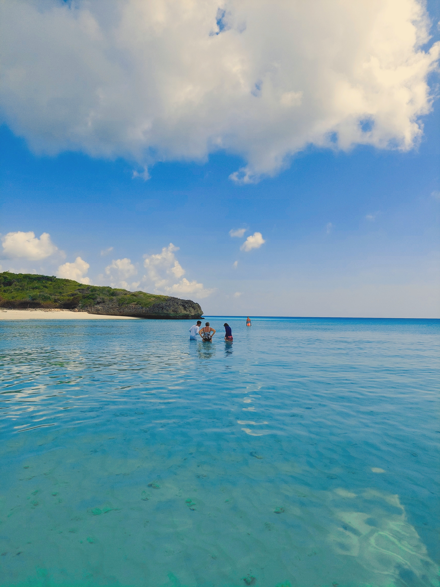
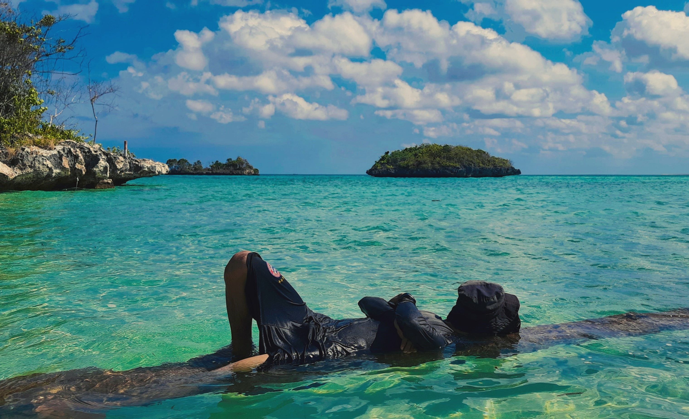
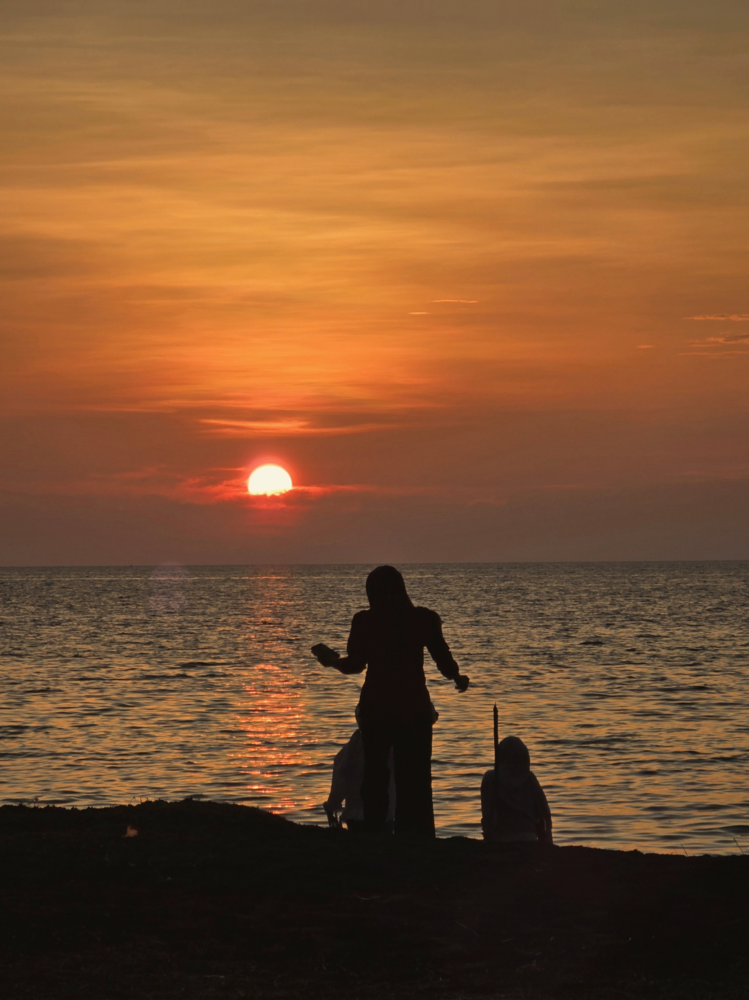

Dari SunaRi Beach Resort
Sehari ke
Bahuluang
Berangkat pagi dari SunaRi, pulang menyambut senja
Ikuti perjalanannya →

Sehari ke Bahuluang
Satu hari, banyak cerita
Snorkeling di air sebening kaca, pasir yang muncul di tengah laut, gua dengan stalaktit dan stalagmit yang indah, dan makan siang di pantai yang sepi.
SunaRi · Selayar#sunarisunsetmoment02 / 20

Sehari ke Bahuluang± 07.00
Pagi yang pelan di SunaRi
Sarapan di Bajoy Beach Resto sambil memandang laut. Siapkan baju renang, topi, dan tabir surya.
SunaRi · Selayar#sunarisunsetmoment03 / 20

Sehari ke Bahuluang± 08.00
Mengikuti laut hari itu
Pagi-pagi kami cek pasang-surut dan kabari kamu. Dari situ ditentukan titik temu dengan kapten kapal.
SunaRi · Selayar#sunarisunsetmoment04 / 20
Sehari ke Bahuluang
Menyeberang ke pulau
Air cukup tinggi, kapal berangkat dari Bone Taringan, sekitar 20 menit. Air surut, kita berangkat dari Turungan.
SunaRi · Selayar#sunarisunsetmoment05 / 20
Sehari ke Bahuluang
Laut yang berganti warna
Dari biru tua ke toska. Karang terlihat jelas dari sisi kapal.
SunaRi · Selayar#sunarisunsetmoment06 / 20

Sehari ke Bahuluang
Batu karang berlubang
Salah satu pemandangan yang menyapa di perjalanan. Siapkan kamera.
SunaRi · Selayar#sunarisunsetmoment07 / 20
Sehari ke Bahuluang± 10.00
Tiba di Makam Karang
Gosong karang putih di tengah laut, dikelilingi air jernih. Spot snorkeling pertama hari ini.
SunaRi · Selayar#sunarisunsetmoment08 / 20

Sehari ke Bahuluang
Air sebening kaca
Masker dan pelampung sudah disiapkan. Ikan-ikan kecil datang menyapa di antara karang.
SunaRi · Selayar#sunarisunsetmoment09 / 20

Sehari ke Bahuluang
Di atas Makam Karang
Pakai sepatu air, lalu susuri punggung Makam Karang yang membentang ke tengah laut.
SunaRi · Selayar#sunarisunsetmoment10 / 20
Sehari ke Bahuluang
Ditemani kru yang sigap
Naik-turun kapal, memasang alat snorkeling, mencari spot foto. Kru kapal selalu siap membantu.
SunaRi · Selayar#sunarisunsetmoment11 / 20
Sehari ke Bahuluang
Pasir yang muncul
Pasir Timbul Bahuluang muncul di tengah laut. Kapten akan membawamu ke sana saat airnya paling pas.
SunaRi · Selayar#sunarisunsetmoment12 / 20

Sehari ke Bahuluang
Makan siang di pasir putih
Rehat di pantai barat Bahuluang, Pantai Bone Kidi dan Bone Bakka. Lunchbox, air toska, tidak ada yang perlu dikejar.
SunaRi · Selayar#sunarisunsetmoment13 / 20

Sehari ke Bahuluang
Sebentar rebahan
Biarkan air dangkal yang hangat melepas lelah. Kalau ingin, bisa juga mampir ke perkampungan Bahuluang.
SunaRi · Selayar#sunarisunsetmoment14 / 20
Sehari ke Bahuluang
Di depan Gua Lipang
Tebing batu kapur menjulang, airnya toska sampai dasar terlihat.
SunaRi · Selayar#sunarisunsetmoment15 / 20
Sehari ke Bahuluang
Melangkah masuk
Pintu gua menyambut dengan kolam karang dan cahaya laut di belakang.
SunaRi · Selayar#sunarisunsetmoment16 / 20
Sehari ke Bahuluang
Sejuk di dalam
Stalaktit menggantung di atas kepala, lantainya pasir putih. Gua yang dibentuk laut selama ribuan tahun.
SunaRi · Selayar#sunarisunsetmoment17 / 20
Sehari ke Bahuluang± 15.00
Saatnya pulang
Sekitar pukul tiga kapal kembali ke titik temu, lalu perjalanan darat ke SunaRi.
SunaRi · Selayar#sunarisunsetmoment18 / 20

Sehari ke BahuluangSore
Senja menunggu di SunaRi
Sore hari sudah kembali. Masih sempat mandi dan rebahan, lalu duduk di Pantai Sunari menunggu matahari tenggelam.
SunaRi · Selayar#sunarisunsetmoment19 / 20

Simpan alurnya
Satu hari, satu pulau
07.00Sarapan di SunaRi
08.00Berangkat ke titik temu
·Kapal dari Bone Taringan / Turungan
10.00Makam Karang & snorkeling
·Pasir Timbul, waktunya diatur kapten
·Makan siang di Bone Kidi & Bone Bakka
·Jelajah Gua Lipang
15.00Kapal pulang, senja di SunaRi
Ingin ke Bahuluang saat menginap? Biar kami bantu atur.
Simpan & tag teman perjalananmu
WhatsApp 0821-8903-3044
Pantai Sunari · Selayar
#sunarisunsetmoment